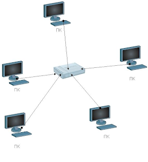

https://www.youtube.com/watch?v=ahOrOWcmNIY
4. Ход занятия
|
Этап Время |
Содержание (кратко) |
Методы и средства обучения |
|
Вводный 5 мин. |
Приветствие. Сообщение темы лекции, цели, плана занятия. |
|
|
20 мин. |
Название и краткое содержание История развития средств вычислительной техники Классификация ЭВМ Принципы организации ЭВМ |
Наглядный метод: метод иллюстраций — использование слайдов.
|
|
10 мин |
Название и краткое содержание видеоматериал « Какой путь прошли компьютеры до наших дней? 1905-2019 [ЭВОЛЮЦИЯ КОМПЬЮТЕРОВ » |
Наглядный метод: метод демонстраций —видео |
|
5 мин. |
Название и краткое содержание Недостатки компьютерных сетей – но использование этих сетей с каждым годом растет |
Проблемный метод (предъявление проблемы и создание проблемной ситуации)
|
|
Заключительный 10 мин |
Подведение итогов. Выводы по теме. Преимущества ЭВМ. Сравнительный анализ
|
Метод проблемного изложения Провести аналогию с видами топологии
|
5.
Рефлексия по занятию (Рефлексия
- это самоанализ, самооценка, "взгляд внутрь себя".
Применительно к урокам, рефлексия - это этап урока, в ходе которого
учащиеся самостоятельно оценивают свое состояние, свои эмоции,
результаты своей деятельности)
На занятиях применяется видеоматериал «Основы компьютерных сетей - принципы работы и оборудование». После обязательно будут опрошены 3-4 студента:
Оценка
своей деятельности.
Студент должен задуматься над такими вопросами: "Что я успел
сделать на занятии? Чего достиг? Что осталось для меня
нерешенным?"
Провести такой вид рефлексии можно, оформив
"лестницу успеха". Студент сам должен оценить, на какой
ступеньке он оказался в результате деятельности во время занятия,
т.е. оценить достигнутые результаты.
6. Домашнее задание
Задание на СРС
Общее: анализ конспекта, выборочное: реферат на тему «Классификация вычислительных машин. Совместимость», «Эволюция вычислительной техники».
Задание на СРСП
- Изучите классификации вычислительных машин и сделать анализ совместимости.
2. Цели, задачи: введение нового материала. Актуализация знаний по предыдущей теме.
2.1. Перечень профессиональных умений, которыми овладевают обучающиеся в процессе учебного занятия
Получение знаний о назначениях и составе беспроводных сетей. Знание классификации беспроводных сетей и умение делать сравнительный анализ с традиционными сетями
2.2 Краткое содержание занятия
При создании компьютерной сети передачи данных, когда соединяются всекомпьютеры сети и другие сетевые устройства, формируется топология компьютерной сети.
Сетевая топология (от греч. τоπος,
- место) - способ описания конфигурации сети, схема расположения и
соединения сетевых устройств.
3.1.
Физическая топология сети передачи данных
Исторически сложились определённые типы физических топологий
сети. Рассмотрим некоторые, наиболее часто встречающиеся
топологии.
«Общая шина»
Общая шина (Рис. 6) являлась до недавнего времени самой
распространенной топологией для локальных сетей. В этом случае
компьютеры подключаются к одному коаксиальному кабелю по схеме
«монтажного ИЛИ». Передаваемая информация, в этом случае,
распространяется в обе стороны.
Применение топологии «общая шина» снижает стоимость кабельной прокладки, унифицирует подключение различных модулей, обеспечивает возможность почти мгновенного широковещательного обращения ко всем станциям сети. Основными преимуществами такой схемы являются дешевизна и простота разводки кабеля по помещениям. Самый серьезный недостаток общей шины заключается в ее низкой надежности: любой дефект кабеля или какого-нибудь из многочисленных разъемов полностью парализует всю сеть.
Другим недостатком общей
шины является ее невысокая производительность, так как при таком
способе подключения в каждый момент времени только один компьютер
может передавать данные в сеть. Поэтому пропускная способность канала
связи всегда делится здесь между всеми узлами сети.
Топология «звезда»
В
этом случае каждый компьютер подключается отдельным кабелем к общему
устройству, называемому коммутатором (концентратором,
хабом), который находится в центре сети (Рис. 7). В функции
коммутатора входит направление передаваемой компьютером информации
одному или всем остальным компьютерам сети. Главное преимущество этой
топологии перед общей шиной - значительно большая надежность. Любые
неприятности с кабелем касаются лишь того компьютера, к которому этот
кабель присоединен, и только неисправность коммутатора может вывести
из строя всю сеть. Кроме того, коммутатор может играть роль
интеллектуального фильтра информации, поступающей от узлов в сеть, и
при необходимости блокировать запрещенные администратором
передачи.
Сетевой
концентратор или Хаб (жарг. от англ. Hub –
центр деятельности) – сетевое устройство, предназначенное для
объединения нескольких устройств Ethernet в общий сегмент сети.
Устройства подключаются при помощи витой пары, коаксиального кабеля
или оптоволокна. Термин концентратор (хаб) применим также к другим
технологиям передачи данных: USB, FireWire и пр.

Топология «кольцо»
В информационно вычислительных сетях с
кольцевой конфигурацией данные передаются по кольцу
от одного компьютера к другому, как правило, в одном направлении
(Рис. 8). Если компьютер распознает данные как «свои», то
он копирует их себе во внутренний буфер. Кольцо представляет собой
очень удобную конфигурацию для организации обратной связи - данные,
сделав полный оборот, возвращаются к узлу-источнику. Поэтому этот
узел может контролировать процесс доставки данных адресату. Часто это
свойство кольца используется для тестирования связности сети и поиска
узла, работающего некорректно. Для этого в сеть посылаются
специальные тестовые сообщения.
В сети с
кольцевой топологией необходимо принимать специальные меры, чтобы в
случае выхода из строя или отключения какой-либо станции не прервался
канал связи между остальными станциями.
Поскольку такое дублирование повышает надёжность системы,
данный стандарт с успехом применяется в магистральных каналах
связи.
Данная физическая топология с
успехом реализуется в сетях, созданных с использованием технологии
FDDI.
FDDI (англ. Fiber Distributed Data Interface —
распределённый волоконный интерфейс данных) - стандарт
передачи данных в локальной сети, протяжённостью до 200 километров.
Стандарт основан на протоколе Token Bus. В качестве среды
передачи данных в FDDI рекомендуется использовать
волоконно-оптический кабель, однако можно использовать и медный
кабель, в таком случае используется сокращение CDDI (Copper
Distributed Data Interface). В качестве топологии используется
схема двойного кольца, при этом данные в кольцах
циркулируют в разных направлениях. Одно кольцо считается основным, по
нему передаётся информация в обычном состоянии; второе —
вспомогательным, по нему данные передаются в случае обрыва на первом
кольце. Для контроля за состоянием кольца используется сетевой
маркер, как и в технологии Token Ring.
Полносвязная топология
Полносвязная
топология соответствует сети, в которой каждый компьютер
сети связан со всеми остальными (Рис. 9). Несмотря на логическую
простоту, этот вариант оказывается громоздким и неэффективным.
Действительно, каждый компьютер в сети должен иметь большое
количество коммуникационных портов, достаточное для связи с каждым из
остальных компьютеров сети. Для каждой пары компьютеров должна быть
выделена отдельная электрическая линия связи. Полносвязные топологии
применяются редко, так как не удовлетворяют ни одному из приведенных
выше требований. Чаще этот вид топологии используется в многомашинных
комплексах или глобальных сетях при небольшом количестве компьютеров.
2.3. Контрольные вопросы:
1. Что понимают под терминами «вычислительная техника», «компьютер», «электронно-вычислительная техника»?
2. Какие типы устройств использовались для выполнения вычислительных операций?
3. Что понимается под термином «поколение ЭВМ»?
4. Какие поколения выделяют в истории развития ЭВМ?
5. Как эволюционировала элементная база компьютеров от поколения к поколению?
6. По каким признакам можно классифицировать ЭВМ?
7. В чем разница между сервером и рабочей станцией?
8. Что понимается под «архитектурой ЭВМ»?
9. Какие принципы организации ЭВМ называют «принципами фон Неймана»?
10. В чем заключается принцип открытой архитектуры?
11. В чем заключается магистрально-модульный принцип построения компьютера?
12. Какие устройства размещаются на материнской плате?
13. Какие виды компьютерной памяти вы знаете?
14. Какие устройства относятся к устройствам ввода/вывода? 15. Опишите структурную блок-схему персонального компьютера.
16. Что называют конфигурацией вычислительной техники?
2.4. Глоссарий
Глоссарий
|
На русском языке |
На казахском языке |
На английском языке |
|
Адаптер |
Адаптер |
Adapter |
|
аппаратное устройство или программный компонент, преобразующий передаваемые данные из одного представления в другое |
||
|
Драйвер |
Драйвер |
Driver |
|
компьютерное программное обеспечение (программа-посредник), с помощью которого другое программное обеспечение (операционная система) получает доступ к аппаратному обеспечению некоторого устройства. |
||
|
Интерфейс |
Интерфейс |
Interface |
|
стандартизированная система сигналов и вид связи между отдельными устройствами |
||
|
Кулер |
Кулер |
Cooler |
|
система охлаждения процессора, представляющая собой систему из теплоотводящего радиатора и вентилятора. |
||
3. Оснащение занятия
3.1 Учебно-методическое оснащение, справочная литература
Основная:
1. Симонович С.В. Информатика. Базовый курс: Учебник для вузов. Стандарт третьего поколения. – СПб.: Питер, 2015. – 640 с.
2. Ушаков И.А. История науки сквозь призму озарений. Кн. 6. От счетных машин до ЭВМ: Как люди научили машины «думать». – М.: КомКнига, 2010. – 176 с.
3. Питухин Е.А. Основы информатики: учебное пособие / авт.-сост.: Е.А. Питухин, О.А. Зятева. – Петрозаводск: Изд-во ПетрГУ, 2012. – 76 с. http://elibrary.karelia.ru/book.shtml?levelID=031&id=17240&cType=1
4. Хлебников А.А. Информационные технологии: учебник. – М.: КНОРУС, 2014. – 472 с.
5. http://pmik.karelia.ru/user/semenova/Informatika/DOC/Sam_Izuch/History_EVM.pdf
6. https://Top500.org Рейтинг самых мощных компьютеров мира
Дополнительная:
7. https://ru.wikipedia.org/wiki/
8. https://ru.wikipedia.org/wiki/История_вычислительной_техники
9. https://ru.wikipedia.org/wiki/ Статья «Архитектура фон Неймана».
10. http://book.kbsu.ru/theory/chapter3/1_3.html (Классификация компьютеров)
11. http://edu.dvgups.ru/metdoc/its/izisk/informat/metod/3/frame/2.htm#_Toc217156137
12. http://wiki.mvtom.ru/index.php/Классификация_ЭВМ
13. http://wiki.mvtom.ru/index.php/Этапы_развития_вычислительной_техники
14. http://www.probios.ru/options/cpu/ 15. http://cssblok.ru/computer/osnblkomp.html (Основные блоки компьютера)
3.2 Техническое оснащение, материалы (слайды, видеоматериалы )